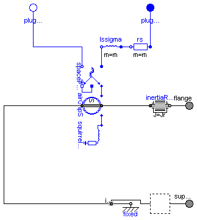

Modelica.Electrical.Machines.BasicMachines.AsynchronousInductionMachines.AIM_SlipRing
Modelica.Electrical.Machines.BasicMachines.AsynchronousInductionMachines.AIM_SlipRing
| Name | Description |
|---|---|
| AIM_SquirrelCage | Asynchronous induction machine with squirrel cage rotor |
| AIM_SlipRing | Asynchronous induction machine with slipring rotor |

| number of pole pairs p | 2 | |
| stator's moment of inertia | 0.29 | kg.m2 |
| rotor's moment of inertia | 0.29 | kg.m2 |
| nominal frequency fNominal | 50 | Hz |
| nominal voltage per phase | 100 | V RMS |
| nominal current per phase | 100 | A RMS |
| nominal torque | 161.4 | Nm |
| nominal speed | 1440.45 | rpm |
| nominal mechanical output | 24.346 | kW |
| efficiency | 92.7 | % |
| power factor | 0.875 | |
| stator resistance | 0.03 | Ohm per phase in warm condition |
| rotor resistance | 0.04 | Ohm in warm condition |
| stator reactance Xs | 3 | Ohm per phase |
| rotor reactance Xr | 3 | Ohm |
| total stray coefficient sigma | 0.0667 | |
| These values give the following inductances, assuming equal stator and rotor stray inductances: |
||
| stator stray inductance per phase | Xs * (1 - sqrt(1-sigma))/(2*pi*fNominal) | |
| rotor stray inductance | Xr * (1 - sqrt(1-sigma))/(2*pi*fNominal) | |
| main field inductance per phase | sqrt(Xs*Xr * (1-sigma))/(2*pi*fNominal) |
| Type | Name | Default | Description |
|---|---|---|---|
| Inertia | Jr | Jr(start=0.29) | rotor's moment of inertia [kg.m2] |
| Boolean | useSupport | false | enable / disable (=fixed stator) support |
| Inertia | Js | stator's moment of inertia [kg.m2] | |
| Integer | p | number of pole pairs (Integer) | |
| Frequency | fsNominal | nominal frequency [Hz] | |
| Current | idq_ss[2] | airGapS.i_ss | stator space phasor current / stator fixed frame [A] |
| Current | idq_sr[2] | airGapS.i_sr | stator space phasor current / rotor fixed frame [A] |
| Current | idq_rs[2] | airGapS.i_rs | rotor space phasor current / stator fixed frame [A] |
| Current | idq_rr[2] | airGapS.i_rr | rotor space phasor current / rotor fixed frame [A] |
| Nominal resistances and inductances | |||
| Resistance | Rs | warm stator resistance per phase [Ohm] | |
| Inductance | Lssigma | stator stray inductance per phase [H] | |
| Inductance | Lm | main field inductance [H] | |
| Inductance | Lrsigma | rotor stray inductance (equivalent three phase winding) [H] | |
| Resistance | Rr | warm rotor resistance (equivalent three phase winding) [Ohm] | |
| Type | Name | Description |
|---|---|---|
| Flange_a | flange | |
| Flange_a | support | support at which the reaction torque is acting |
| PositivePlug | plug_sp | |
| NegativePlug | plug_sn |
model AIM_SquirrelCage
"Asynchronous induction machine with squirrel cage rotor"
extends Machines.Interfaces.PartialBasicInductionMachine(
final idq_ss = airGapS.i_ss,
final idq_sr = airGapS.i_sr,
final idq_rs = airGapS.i_rs,
final idq_rr = airGapS.i_rr);
Components.AirGapS airGapS( final p=p, final m=3, final Lm=Lm);
parameter Modelica.SIunits.Inductance Lm(start=3*sqrt(1 - 0.0667)/(2*pi*fsNominal))
"main field inductance";
parameter Modelica.SIunits.Inductance Lrsigma(start=3*(1 - sqrt(1 - 0.0667))/(2*pi*fsNominal))
"rotor stray inductance (equivalent three phase winding)";
parameter Modelica.SIunits.Resistance Rr(start=0.04)
"warm rotor resistance (equivalent three phase winding)";
Machines.BasicMachines.Components.SquirrelCage squirrelCageR(final Lrsigma=
Lrsigma, final Rr=Rr);
equation
connect(airGapS.spacePhasor_r, squirrelCageR.spacePhasor_r);
connect(spacePhasorS.spacePhasor, airGapS.spacePhasor_s);
connect(airGapS.support, internalSupport);
connect(airGapS.flange, inertiaRotor.flange_a);
end AIM_SquirrelCage;
Modelica.Electrical.Machines.BasicMachines.AsynchronousInductionMachines.AIM_SlipRing

| number of pole pairs p | 2 | |
| stator's moment of inertia | 0.29 | kg.m2 |
| rotor's moment of inertia | 0.29 | kg.m2 |
| nominal frequency fNominal | 50 | Hz |
| nominal voltage per phase | 100 | V RMS |
| nominal current per phase | 100 | A RMS |
| nominal torque | 161.4 | Nm |
| nominal speed | 1440.45 | rpm |
| nominal mechanical output | 24.346 | kW |
| efficiency | 92.7 | % |
| power factor | 0.875 | |
| stator resistance | 0.03 | Ohm per phase in warm condition |
| rotor resistance | 0.04 | Ohm per phase in warm condition |
| stator reactance Xs | 3 | Ohm per phase |
| rotor reactance Xr | 3 | Ohm per phase |
| total stray coefficient sigma | 0.0667 | |
| turnsRatio | 1 | effective ratio of stator and rotor current (ws*xis) / (wr*xir) |
| These values give the following inductances: | ||
| stator stray inductance per phase | Xs * (1 - sqrt(1-sigma))/(2*pi*fNominal) | |
| rotor stray inductance | Xr * (1 - sqrt(1-sigma))/(2*pi*fNominal) | |
| main field inductance per phase | sqrt(Xs*Xr * (1-sigma))/(2*pi*f) |
Parameter turnsRatio could be obtained from the following relationship
at standstill with open rotor circuit at nominal voltage and nominal frequency,
using the locked-rotor voltage VR, no-load stator current I0 and powerfactor PF0:
turnsRatio * VR = Vs - (Rs + j Xs,sigma) I0
| Type | Name | Default | Description |
|---|---|---|---|
| Inertia | Jr | Jr(start=0.29) | rotor's moment of inertia [kg.m2] |
| Boolean | useSupport | false | enable / disable (=fixed stator) support |
| Inertia | Js | stator's moment of inertia [kg.m2] | |
| Integer | p | number of pole pairs (Integer) | |
| Frequency | fsNominal | nominal frequency [Hz] | |
| Current | idq_ss[2] | airGapS.i_ss | stator space phasor current / stator fixed frame [A] |
| Current | idq_sr[2] | airGapS.i_sr | stator space phasor current / rotor fixed frame [A] |
| Current | idq_rs[2] | airGapS.i_rs | rotor space phasor current / stator fixed frame [A] |
| Current | idq_rr[2] | airGapS.i_rr | rotor space phasor current / rotor fixed frame [A] |
| Boolean | useTurnsRatio | use turnsRatio or calculate from locked-rotor voltage? | |
| Real | turnsRatio | (ws*xis) / (wr*xir) | |
| Voltage | VsNominal | nominal stator voltage per phase [V] | |
| Voltage | VrLockedRotor | locked-rotor voltage per phase [V] | |
| Nominal resistances and inductances | |||
| Resistance | Rs | warm stator resistance per phase [Ohm] | |
| Inductance | Lssigma | stator stray inductance per phase [H] | |
| Inductance | Lm | main field inductance [H] | |
| Inductance | Lrsigma | rotor stray inductance per phase [H] | |
| Resistance | Rr | warm rotor resistance per phase [Ohm] | |
| Type | Name | Description |
|---|---|---|
| Flange_a | flange | |
| Flange_a | support | support at which the reaction torque is acting |
| PositivePlug | plug_sp | |
| NegativePlug | plug_sn | |
| PositivePlug | plug_rp | |
| NegativePlug | plug_rn |
model AIM_SlipRing
"Asynchronous induction machine with slipring rotor"
extends Machines.Interfaces.PartialBasicInductionMachine(
final idq_ss = airGapS.i_ss,
final idq_sr = airGapS.i_sr,
final idq_rs = airGapS.i_rs,
final idq_rr = airGapS.i_rr);
Components.AirGapS airGapS( final p=p, final m=3, final Lm=Lm);
parameter Modelica.SIunits.Inductance Lm(start=3*sqrt(1 - 0.0667)/(2*pi*fsNominal))
"main field inductance";
parameter Modelica.SIunits.Inductance Lrsigma(start=3*(1 - sqrt(1 - 0.0667))/(2*pi*fsNominal))
"rotor stray inductance per phase";
parameter Modelica.SIunits.Resistance Rr(start=0.04)
"warm rotor resistance per phase";
parameter Boolean useTurnsRatio(start=true)
"use turnsRatio or calculate from locked-rotor voltage?";
parameter Real turnsRatio(final min=Modelica.Constants.small, start=1)
"(ws*xis) / (wr*xir)";
parameter Modelica.SIunits.Voltage VsNominal(start=100)
"nominal stator voltage per phase";
parameter Modelica.SIunits.Voltage VrLockedRotor(start=100*(2*pi*fsNominal*Lm)/sqrt(Rs^2+(2*pi*fsNominal*(Lm+Lssigma))^2))
"locked-rotor voltage per phase";
output Modelica.SIunits.Current i_0_r(stateSelect=StateSelect.prefer) = spacePhasorR.zero.i
"rotor zero-sequence current";
output Modelica.SIunits.Voltage vr[m] = plug_rp.pin.v - plug_rn.pin.v
"rotor instantaneous voltages";
output Modelica.SIunits.Current ir[m] = plug_rp.pin.i
"rotor instantaneous currents";
protected
final parameter Real internalTurnsRatio=if useTurnsRatio then turnsRatio else
VsNominal/VrLockedRotor*(2*pi*fsNominal*Lm)/sqrt(Rs^2+(2*pi*fsNominal*(Lm+Lssigma))^2);
public
Machines.SpacePhasors.Components.SpacePhasor spacePhasorR;
Modelica.Electrical.MultiPhase.Ideal.IdealTransformer IdealTransformer1(final m=m, final n=
fill(1/internalTurnsRatio, m));
Modelica.Electrical.MultiPhase.Basic.Star Star1(final m=m);
Modelica.Electrical.Analog.Basic.Ground Ground1;
Modelica.Electrical.MultiPhase.Basic.Inductor lrsigma(final m=m, final L=fill(Lrsigma, m));
Modelica.Electrical.MultiPhase.Basic.Resistor rr(final m=m, final R=fill(Rr, m));
Modelica.Electrical.MultiPhase.Interfaces.PositivePlug plug_rp(final m=m);
Modelica.Electrical.MultiPhase.Interfaces.NegativePlug plug_rn(final m=m);
equation
connect(rr.plug_n, lrsigma.plug_p);
connect(spacePhasorR.plug_n, IdealTransformer1.plug_n2);
connect(spacePhasorR.plug_p, IdealTransformer1.plug_p2);
connect(IdealTransformer1.plug_p1, lrsigma.plug_n);
connect(Star1.pin_n, Ground1.p);
connect(Star1.plug_p, IdealTransformer1.plug_n2);
connect(IdealTransformer1.plug_n1, plug_rn);
connect(rr.plug_p, plug_rp);
connect(spacePhasorR.ground, spacePhasorR.zero);
connect(airGapS.spacePhasor_r, spacePhasorR.spacePhasor);
connect(spacePhasorS.spacePhasor, airGapS.spacePhasor_s);
connect(airGapS.support, internalSupport);
connect(airGapS.flange, inertiaRotor.flange_a);
end AIM_SlipRing;